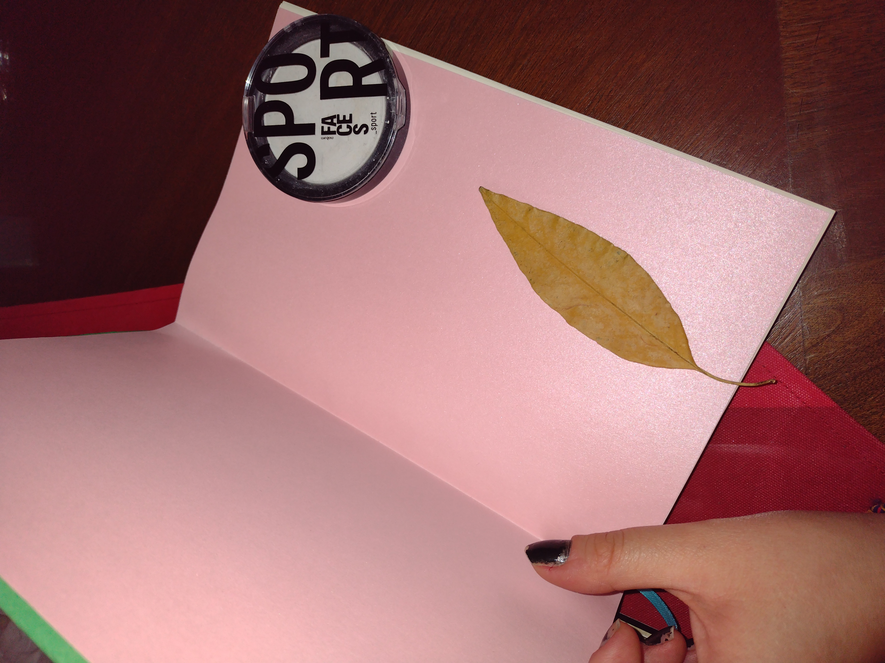
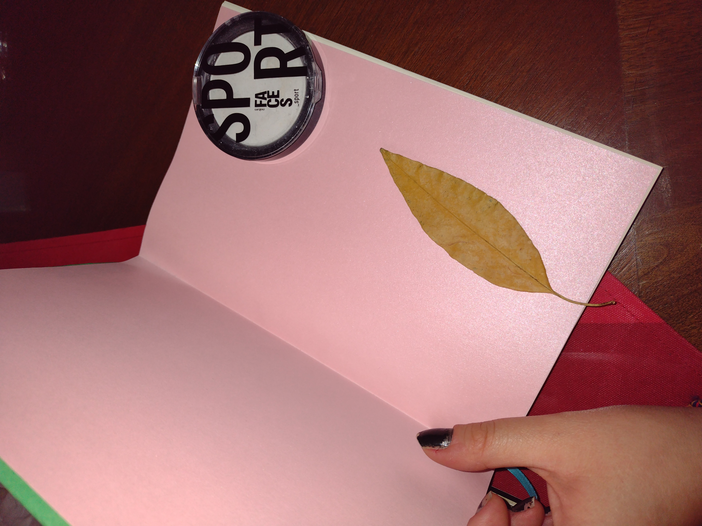

Nuestro emprendimiento nace de la necesidad de crear cuadernos artísticos y personales para la generación de la creatividad y/o organización, para un público especializado en el arte y/o otras disciplinas. Siempre ha sido un problema ver que existen cuadernos generalizados para el sector escolar, sin embargo son pocos los cuadernos que invitan a dibujar, rayar, escribir sensaciones o sentimientos.
Luego de participar en diversos talleres de encuadernación, se buscó una opción más económica para las personas inquietas en captar el momento creativo, íntimo y, ¿por qué no? llevar a cabo un hábito.
Las primeras apariciones de este emprendimiento, fueron en bazares a nivel local, en donde de inmediato llamó la atención que son productos hechos a mano y con el sello de un emprendimiento a desarrollarse.
Desde el 2021, actualmente los cuadernos han sido regalos, cuadernos de creación, inspiración y disciplina.

 

Desde el 2020 hasta la actualidad, hemos estado en constantes talleres de encuadernación, sobre todo estilo francés, con el fin de perfeccionar la técnica de encuadernación de forma más económica y en menor tiempo posible.
Se espera que los cuadernos artesanales tengan reconocimiento local, es decir sea un producto elegido para las empresas en la ciudad de Morelia, y en los municipios colindantes.